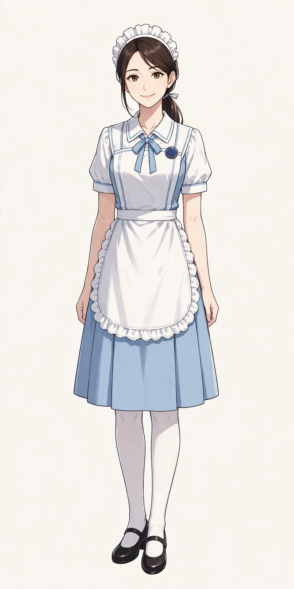
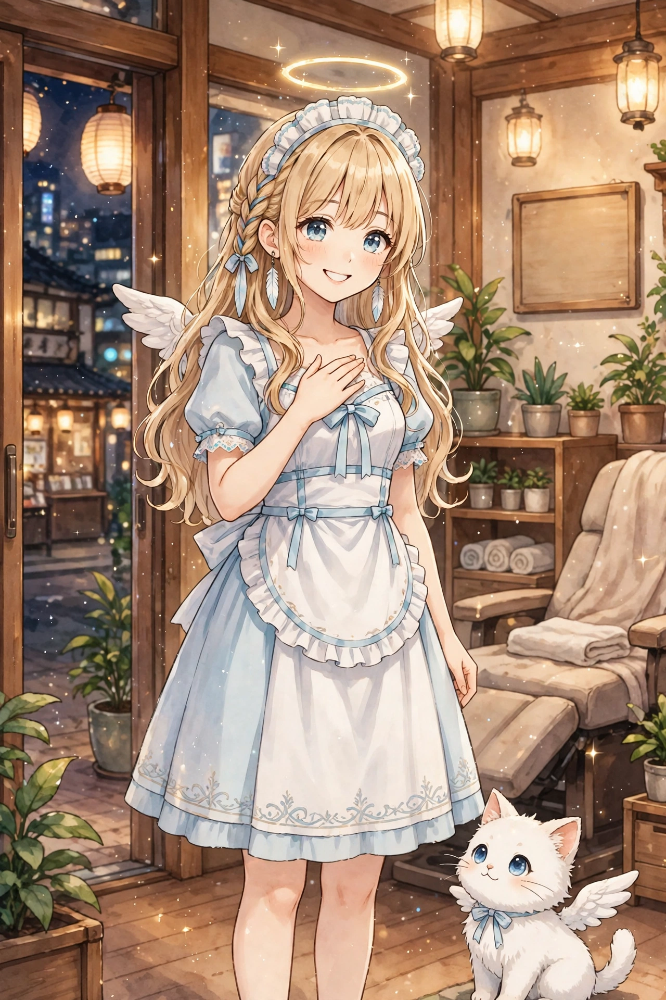
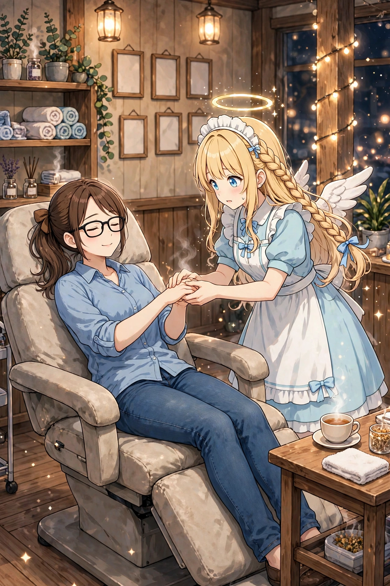
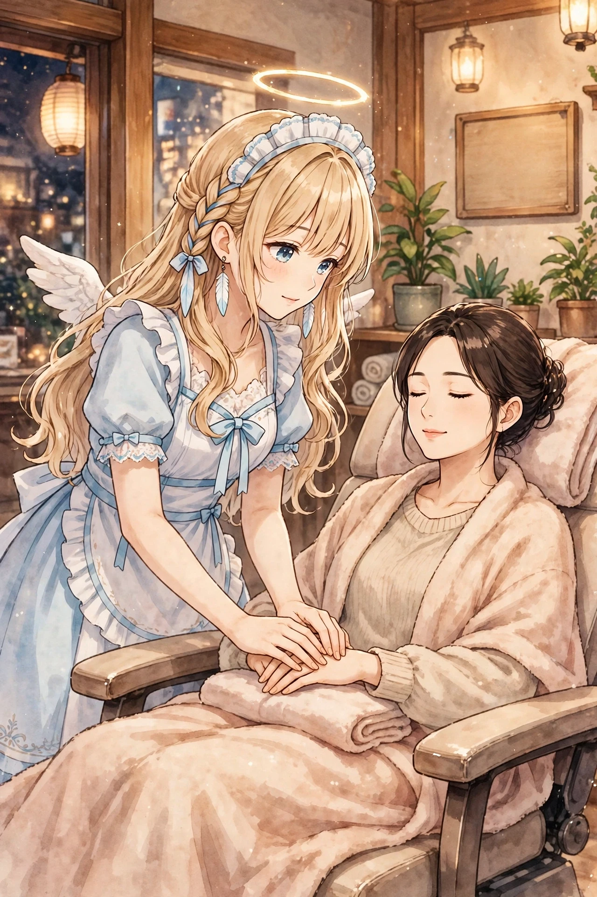
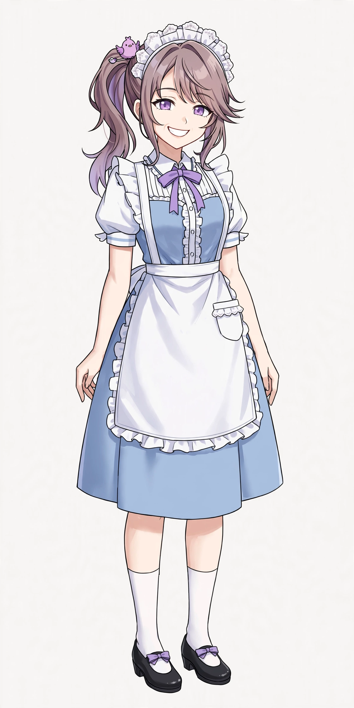
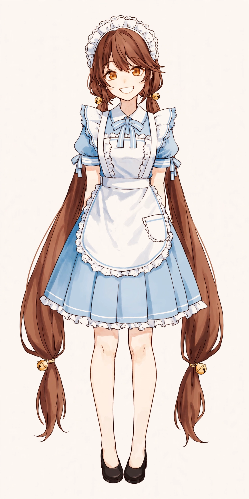

橘 葵
メイドリフレ店「てんしのたまご」の店長（28歳・元セラピスト）。穏やかで短く的確な物言い。「無理をしない。相手の呼吸に合わせる」が指導の口癖。

第11弾『後輩降臨編』の後日談。今度は、人間の「体の疲れ」に応える技術を学ぶお話です。きっかけは、ゆかりの「手が楽になったわ」という一言と、手のひらの固さの感触。日本橋のメイドリフレ店「てんしのたまご」でアルバイト修行を始めたセラフィナは、天使の力に頼らず、手の温かさと相手の話を聞くことで、疲れた人をほっとさせられる一人前を目指します。気持ちが入りすぎて手から小さな光が漏れる失敗もあれば、卒業試験で初めて一人でフルコースを任される成長もあります。
舞台は架空のメイドリフレ店「てんしのたまご」。先輩メイド・鈴原ことりの指導のもと、接客作法から足湯、フットリフレ、ハンドリフレ、耳かき、ヘッドスパまで、一段ずつ修行が進みます。穏やかな店長・橘 葵、手先が器用でドジな同期・早瀬りんも初登場。偵察のつもりが施術でとろけて常連化する見習い悪魔ルチアと黒猫ノワール、視察に訪れる先輩天使ガブリエラ、「指名」で再来店する二宮ゆかり、看板猫モコ、応援団のフィオレッタと伝書鳩ピッポも登場します。観音菩薩の言葉を思い出す静かな場面は、敬意を持って描いています。
ダウンロード販売（ZIP 3分割）／全年齢／BOOTH「angel222」で販売中
| タイトル | セラフィナ 第12弾『メイドリフレ修行編』イラストパック30点｜見習い天使の現代日本コメディ |
|---|---|
| 収録内容 | イラスト30点（ダウンロード販売・ZIP 3分割） |
| 価格 | 500円 |
| 販売 | BOOTH「angel222」 https://angel222.booth.pm/items/9091441 |
| 初登場 | 橘 葵（メイドリフレ店「てんしのたまご」店長）／鈴原 ことり（先輩メイド）／早瀬 りん（同期入店のメイド） |
| 備考 | 全年齢。登場するキャラクターと店舗は架空の存在です。イラストにはAI生成を含みます |




メイドリフレ店「てんしのたまご」の店長（28歳・元セラピスト）。穏やかで短く的確な物言い。「無理をしない。相手の呼吸に合わせる」が指導の口癖。

セラフィナの指導役の先輩メイド（24歳・姉御肌）。接客中は完璧なメイド言葉、裏では関西寄りの素の口調が少し出る。

セラフィナと同期入店のメイド（22歳）。手先が器用でドジっ子。セラフィナを「セラちゃん」と呼ぶ、明るく人懐っこい関西寄りの口調。
3人のキャラクターページは準備中です。
物語の1つ前は、第11弾『後輩降臨編』です。